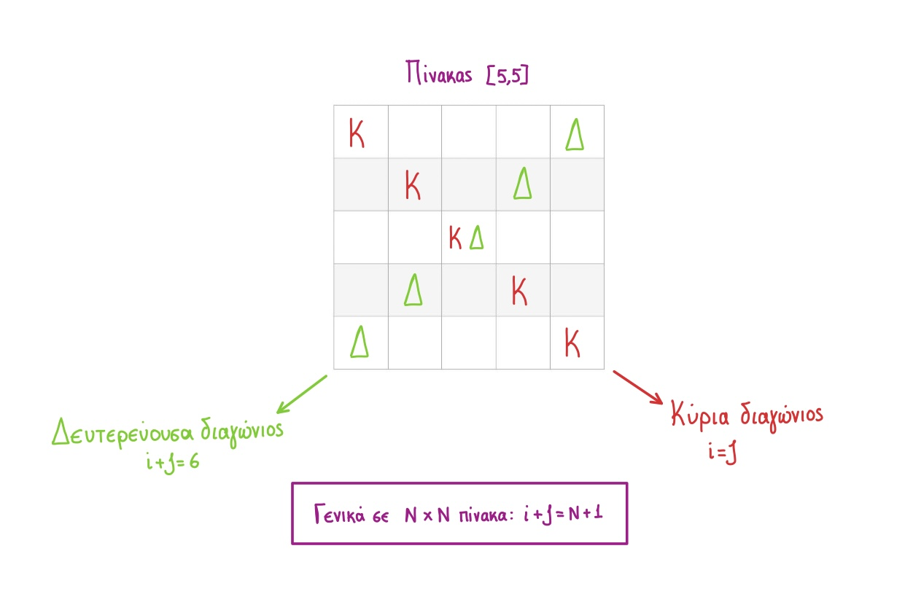

Ορισμός: Τετραγωνικός πίνακας είναι ένας δισδιάστατος πίνακας με ίσο μέγεθος διαστάσεων και γενικά συμβολίζεται ως πίνακας NxN.
Παρατηρούμε ότι στην κύρια διαγώνιο του υπάρχουν πολλαπλάσια του 10 έως και το 50.
Στα υπόλοιπα κελιά υπάρχουν διαδοχικοί αριθμοί από το 1 έως το 20.
Κ <- 10
Λ <- 1
ΓΙΑ i ΑΠΟ 1 ΜΕΧΡΙ 5
ΓΙΑ j ΑΠΟ 1 ΜΕΧΡΙ 5
ΑΝ i=j ΤΟΤΕ
Α[i,j] <- Κ
Κ <- Κ+10
ΑΛΛΙΩΣ
Α[i,j] <- Λ
Λ <- Λ+1
ΤΕΛΟΣ_ΑΝ
ΤΕΛΟΣ_ΕΠΑΝΑΛΗΨΗΣ
ΤΕΛΟΣ_ΕΠΑΝΑΛΗΨΗΣ